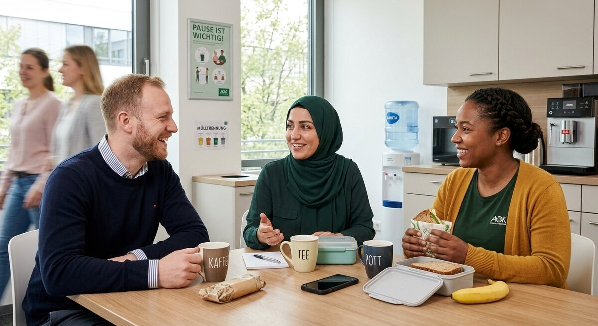

Teil 2 · Bild und Erfahrung
Karte 019
Kolleginnen und Kollegen in der Pause
Ausführliches Übungsmaterial zur Vorder- und Rückseite der Karte.

Ihre Aufgabe
- den Ort und die Personen
- warum Pausen bei der Arbeit wichtig sind
- worüber Kolleginnen und Kollegen in der Pause sprechen
- Ihre Erfahrungen am Arbeitsplatz oder im Praktikum
- was gute Zusammenarbeit ausmacht
Interaktives Sprechtraining
Mit ChatGPT sprechen üben
Öffne ChatGPT, starte dort zuerst den Sprachmodus (Voice Mode) und füge anschließend den kopierten Übungsprompt in diesen Chat ein.
- Tippe auf den Button. Der Übungsprompt wird kopiert und ChatGPT wird geöffnet. Melde dich bei Bedarf in deinem ChatGPT-Konto an.
- Starte in ChatGPT zuerst den Sprachmodus (Voice Mode).
- Füge den bereits kopierten Prompt in den Chat des Sprachmodus (Voice Mode) ein und sende ihn ab.
- Beginne anschließend die Sprechübung.
- Wenn du die Übung beenden und Feedback bekommen möchtest, sage:
Die Übung ist beendet. Bitte gib mir jetzt Feedback.
Prompt anzeigen oder manuell kopieren
ChatGPT ist ein externer Dienst. Für den Sprachmodus (Voice Mode) musst du dich möglicherweise bei deinem ChatGPT-Konto anmelden und den Zugriff auf das Mikrofon erlauben. Verfügbare Funktionen hängen von deinem Gerät und Konto ab. Die Übung ersetzt keine offizielle Prüfungsbewertung.
Nützliche Satzanfänge
- Ich nehme an, dass …
- Die Pause ist wichtig, weil …
- Oft spricht man dabei über …
- Bei meiner Arbeit / in meinem Praktikum …
- Gute Zusammenarbeit bedeutet für mich …
Modellantwort anhören
Höre zuerst aufmerksam zu. Sprich danach nicht einfach alles nach, sondern bearbeite die Aufgabe mit eigenen Informationen.
Modellantwort
Ich nehme an, dass das Bild einen Pausenraum in einer Firma zeigt. Drei Kolleginnen oder Kollegen sitzen zusammen an einem Tisch, trinken etwas und unterhalten sich. Die Atmosphäre wirkt entspannt. Wahrscheinlich machen sie gerade eine kurze Pause zwischen zwei Arbeitsphasen.
Pausen sind bei der Arbeit sehr wichtig, weil man sich kurz erholen und wieder konzentrieren kann. Außerdem lernt man dabei oft seine Kolleginnen und Kollegen besser kennen. In der Pause spricht man nicht nur über die Arbeit, sondern auch über Familie, Pläne für das Wochenende oder einfach über kleine Dinge aus dem Alltag. In meinem Praktikum habe ich gemerkt, dass solche Gespräche helfen, Vertrauen aufzubauen. Gute Zusammenarbeit bedeutet für mich, dass man respektvoll miteinander umgeht, Fragen stellen darf und sich gegenseitig unterstützt.
Mögliche Prüferfragen und Antwortideen
-
Arbeiten Sie lieber in einer ruhigen oder in einer kommunikativen Umgebung?
Antwortidee: Eine Mischung ist gut. Ich brauche Ruhe zum Arbeiten, aber auch Kontakt mit anderen.
-
Was macht eine gute Kollegin oder einen guten Kollegen aus?
Antwortidee: Zuverlässigkeit, Respekt und Hilfsbereitschaft sind für mich besonders wichtig.
-
Haben Sie schon einmal ein Problem im Team erlebt?
Antwortidee: Ja, aber meistens hilft ein ruhiges Gespräch.
-
Warum sind Pausen auch sprachlich nützlich?
Antwortidee: Weil man dort oft natürlich spricht und neue Wörter aus dem Alltag lernt.
Wortschatz
| Deutsch | Englisch |
|---|---|
| der Pausenraum | break room |
| sich erholen | to recover / rest |
| konzentriert | focused |
| Vertrauen aufbauen | to build trust |
| der Respekt | respect |
| hilfsbereit | helpful |
| die Zusammenarbeit | cooperation |
| die Arbeitsphase | work phase |
Schnelltraining
Beenden Sie diese Sätze: „Bei der Arbeit ist für mich wichtig, dass …“; „Mit Kolleginnen und Kollegen kann man gut arbeiten, wenn …“.